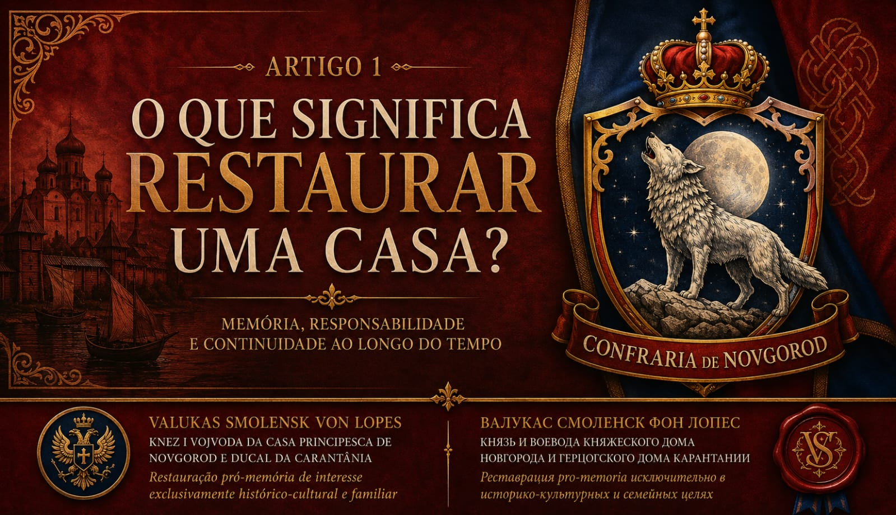
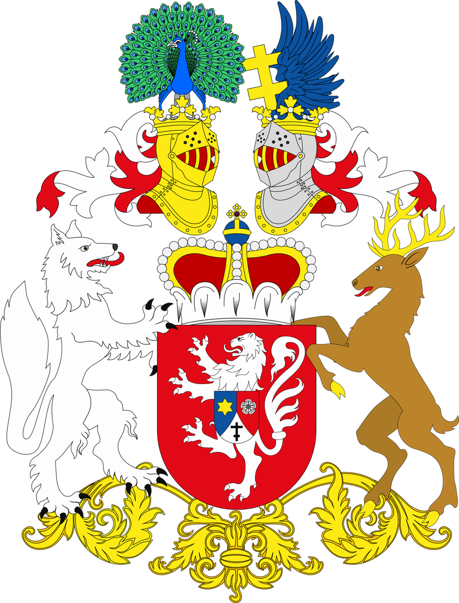

O que significa restaurar uma Casa?
Uma reflexão sobre o sentido de uma restauração pró-memória: continuidade, símbolos, fontes e a responsabilidade de manter um legado inteligível.

Ducal da Carantânia
Período da Restauração: 862–1136
(período principesco de Novgorod)

Uma reflexão sobre o sentido de uma restauração pró-memória: continuidade, símbolos, fontes e a responsabilidade de manter um legado inteligível.

Um resumo dos trabalhos de catalogação e conservação dos brasões e documentos históricos ligados à Casa de Novgorod. Substitua este texto pelo conteúdo real da publicação.

Registro da fidelidade, laço de amizade e cooperação cultural firmado entre as duas casas.
A Casa Principesca de Novgorod encontra suas raízes no período compreendido entre os séculos IX e XII, quando Novgorod se afirmou como um dos mais importantes centros culturais, comerciais e institucionais do mundo eslavo oriental. No seu período principesco, a Casa de Novgorod distinguiu-se por uma forma singular de autoridade, fundada menos na imposição do poder e mais na mediação, no pacto e na responsabilidade perante a comunidade. Essa tradição produziu uma cultura política marcada pela sobriedade, pela centralidade da palavra empenhada e pelo profundo respeito à memória e à ordem simbólica.
A interrupção do regime principesco em 1136 não representou a extinção da Casa, mas a suspensão de sua função política direta. O legado novgorodiano permaneceu vivo na memória histórica, nos registros escritos, nas práticas culturais e na identidade eslava setentrional, conservando-se como referência de uma forma elevada e contida de autoridade. A restauração contemporânea da Casa de Novgorod insere-se, portanto, em uma perspectiva cultural, tradicional e preservacionista, voltada à guarda e à transmissão desse legado, sem reivindicações de soberania estatal ou poder político.
De modo complementar, o título Ducal da Carantânia remonta a uma das mais antigas formações políticas eslavas da Europa Central. A Carantânia destacou-se, desde cedo, por suas estruturas próprias de legitimidade, profundamente enraizadas na tradição, no direito consuetudinário e na participação ritual da comunidade. O ducado carantaniano representa uma expressão primitiva e autêntica da organização eslava, anterior às influências imperiais posteriores, e constitui um elo fundamental entre os povos eslavos alpinos, balcânicos e orientais.
A convergência simbólica entre Novgorod e Carantânia não se dá por dominação ou hierarquia, mas por afinidade civilizacional. Ambas expressam modelos eslavos antigos de autoridade limitada, reconhecimento comunitário, respeito à tradição e centralidade da cultura como elemento de coesão. Nesse sentido, a Casa Principesca de Novgorod e a Casa Ducal da Carantânia se apresentam hoje como instituições memoriais irmãs, comprometidas com a preservação da herança eslava em suas múltiplas expressões regionais.
Esta apresentação é feita em espírito de respeito, amizade e reconhecimento mútuo entre tradições nobiliárquicas eslavas, conscientes de que a verdadeira nobreza se manifesta não na busca de poder, mas na fidelidade à história, à cultura e à honra herdada daqueles que nos precederam.
Os Eslavos - As Misteriosas origens de um Povo
Os Rus de Kiev